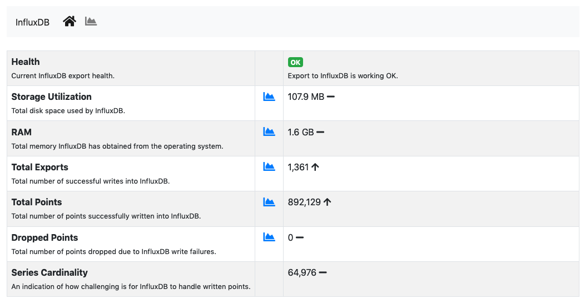
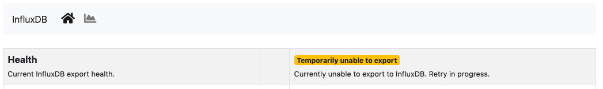
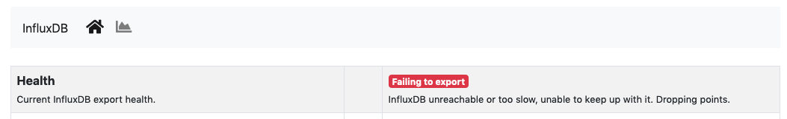
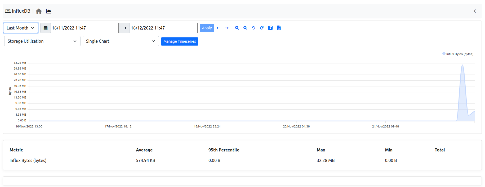

InfluxDB
ntopng имеет InfluxDB Водитель экспортировать временные ряды в InfluxDB. Использование InfluxDB приводит к тому, что ntopng включает и периодически запускает монитор InfluxDB. Монитор InfluxDB проверяет здоровье и статус InfluxDB. На странице есть две вкладки: Обзор и Исторические данные. Обзор, обновляемый каждые 5 секунд, показывает

Главная страница мониторов InfluxDB
Статус карта имеет следующие позиции:
health: Значок зеленого, желтого или красного цвета, в зависимости от статуса InfluxDB. Значок становится зеленым, когда ntopng правильно экспортируется в InfluxDB, желтым, когда есть ошибки экспорта, которые можно исправить и которые не привели к потере данных, красным, когда ошибки экспорта постоянны и происходит потеря данных.storage utilization: Общий объем дискового пространства, используемый InfluxDB.ram: Общий объем памяти InfluxDB, полученный от операционной системы.total exports. Общее количество успешных записей в InfluxDB. Одна запись записывает сразу несколько точек.total points: Общее количество баллов, успешно записанных в InfluxDB.series cardinality: показатель того, насколько сложно InfluxDB обрабатывать письменные баллы. Значок предупреждения появляется, когда он становится настолько высоким, что может замедлиться InfluxDB.
Использование хранилища, RAM и мощность серии отображаются только тогда, когда ntopng может читать базу данных внутреннего мониторинга InfluxDB. Значок диаграммы рядом со значением открывает соответствующую диаграмму.
Когда InfluxDB временно не может экспортировать, health становится желтым.

InfluxDB Временно невозможно экспортировать
Временно невозможно экспортировать означает, что ntopng активно повторяет неудачную попытку экспорта. Экспорт обычно завершается сбоем, когда InfluxDB не работает или не может принять новые данные. После нескольких попыток ntopng сдается и удаляет данные, которые не удалось экспортировать. В этом случае health превращается в красный.

InfluxDB Не удалось экспортировать
Не удалось экспортировать также вызывает срабатывание предупреждений по причине неспособности помочь администратору устранить проблему.
ntopng продолжает повторять попытки, даже если health красный, чтобы восстановиться, как только InfluxDB снова станет полностью функциональным.
Таймсерии товаров, показанных в обзоре, доступны в разделе Исторические данные вкладка.

InfluxDB Мониторинг таймсерий
Таймсерии можно отключить из ntopngPreferences, вкладка Таймсерии->Системные зонды: Исторические данные вкладка, и значки диаграммы будут отключены.